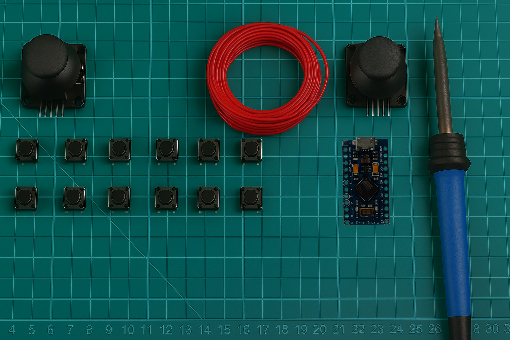
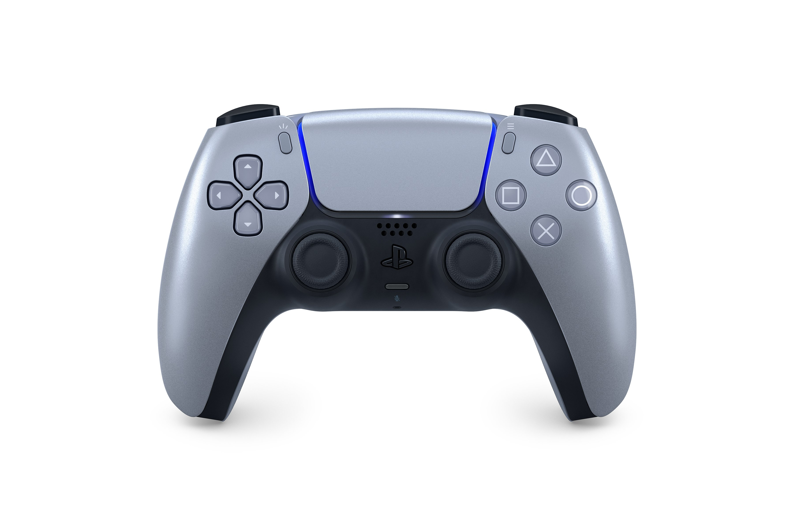

Highlight the components in the following image, as the narrator mentions them, you can put them in boxes

Or, you can display individual components, the component sprites are shown below
Pro micro


Joystick

Single core 0.5mm core diameter jumper wires

Female to Female jumper wires

Dead PCB

Push Buttons


Fit this breadboard gamepad seach result into the video

Use this playstation controller image

Use this image of 3D printer, and collect the picture of empty wallet yourself

I have included several images of the notebooks, from which I collected the
paperboard and several pics of the left over paperboard from my last project in this folder
Now, "Animated measurements of pieces of paperboards", here we use a picture of the paper
board on a wooden BG as shown below,

And mark the dimentions like shown below but with animations, creative decisions is yours

For "PlayStation controller to simplified shape", I haven't thought about how to show it, but I can provide these
A real PlayStation controller
Simple 2d shape

and the simplified shape I used, try to highlight the actual controller shape
Inch unit

Millimeter unit

Here's a build frame showing the shape (if you need any other type of shape image please ask me, okay)

Now to display the glue test I need your openions, but I have cllected a few memes, in the folder